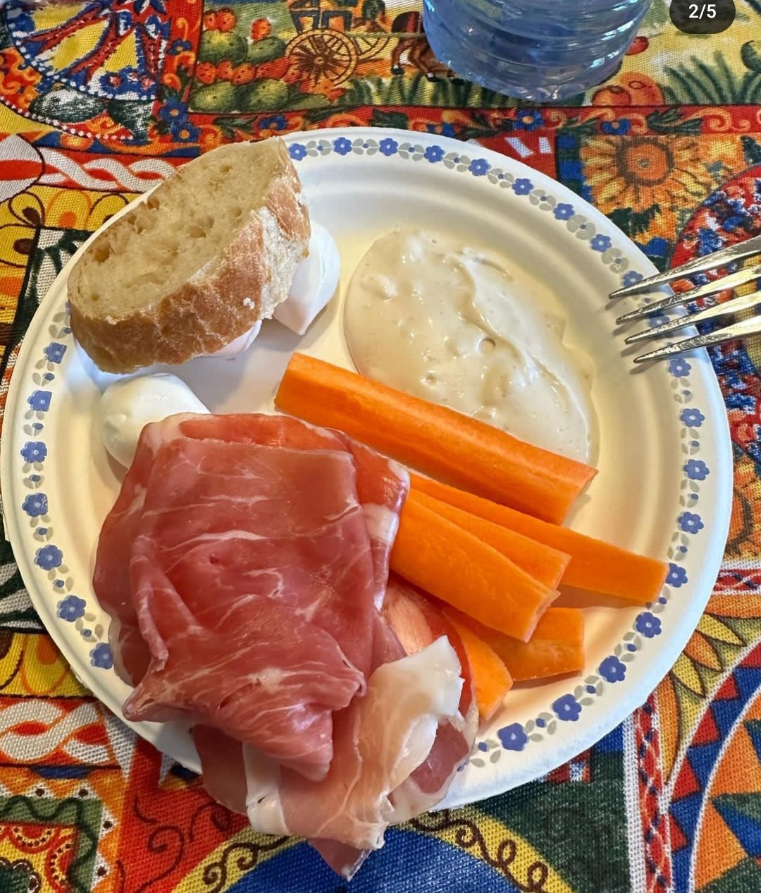

R.MENU
La clave para adelgazar 10kg es tomar la decision de querer hacerlo, es decir, esta en tus manos conseguirlo, solo tienes que cambiar algunos habitos y nosotros te daremos las pautas para lograrlo. Para empezar, debes saber que no hay que tener prisa. Si recomendamos perder peso es para mejorar la salud y si, seguramente tambien mejorara tu imagen, pero no tendria sentido verte mejor si pones tu salud al limite.
Un buen ritmo de perdida de peso es de alrededor de 0,5kg por semana, lo que serian 2kg al mes y en unos 5 meses habras logrado perder los 10kg. Asi que no te plantees “seguir una dieta”, si no cambiar tus habitos para siempre, de esta forma no solo conseguiras perder peso si no que ademas lograras mantenerlo. Plantearte seguir una dieta para adelgazar 10kg en un mes ademas de no se realista, ten por seguro que afectara a tu salud y que obtendras un efecto rebote en los siguientes meses que afectaran a tu capacidad futura de mantener un peso sano.
No se trata de seguir dietas estrictas en la que se limitan grupos de alimentos. Se trata de comer de todos los grupos de alimentos para obtener todos los nutrientes que nuestro cuerpo necesita. La estrategia se basa en tomar menos calorias de las que gastamos a costa de azucares y grasas, especialmente las que no son saludables. A esta estrategia se le llama dieta hipocalorica.

Preferiblemente desnatados (leche, yogur y queso fresco 0%). Si tomas bebidas vegetales, elige las enriquecidas en calcio.
Todas las verduras son recomendables para bajar de peso rapido. Incluyelas tanto en la comida como en la cena como plato principal, desde las hojas para ensalada, tomate, pepino… a hortalizas como berenjena o calabacin, o cruciferas (brocoli, coles…) y tambien las setas.
Tambien se aconsejan todas las frutas ¡incluso el platano! Lo ideal es tomar 2 o 3 raciones cada dia. Puedes tomarla de postre o entre horas. Son un tentempie ideal.
Este grupo de alimentos es el que utilizamos de forma energetica, como si fuera nuestra gasolina. Debemos tomarlo para que el organismo pueda hacer sus funciones, pero debemos controlar la cantidad para que el cuerpo tambien pueda aprovechar las reservas energeticas (grasa acumulada) y asi adelgazar. La cantidad orientativa que hay que anadir en la comida y el la cena es la medida de un puno. Arroz, pasta, cuscus, pan… preferentemente integral, legumbres (lentejas, garbanzos o alubias) y patata.
Aunque los hidratos de carbono sean tan poco populares, son fundamentales para el rendimiento muscular. La cantidad que necesites consumir dependera del programa de entrenamiento y de los objetivos que tengas, pero, para que te hagas una idea, cuanto mas intenso sea el entrenamiento, mas hidratos de carbono debera aportar tu alimentacion. Para los mortales como tu y como yo, seguir el modelo del plato saludable puede resultar de gran ayuda para hacer una estimacion de la proporcion de hidratos de carbono que podemos incluir en nuestra alimentacion.
Uno de los mayores mitos que hay en alimentacion y deporte es que,como los musculos estan hechos de proteinas, es necesario consumir una gran cantidad de ellas para desarrollar masa muscular. Ya te imaginaras que esto es mas falso que un unicornio y es que para desarrollar la masa muscular lo que hay que hacer es ejercitarla. Es cierto que los deportistas profesionales tienen unos requerimientos proteicos mayores, pero no se alejan excesivamente de los de la poblacion general. Tu, que has decidido apuntarte al gimnasio e ir tres veces a la semana -lo cual esta muy bien-, sigues siendo poblacion general. Asi que, al igual que con los hidratos de carbono, centrate en las proporciones de alimento proteico que indica el plato saludable y dejate de gastarte el dinero en batidos de proteina y otros suplementos.